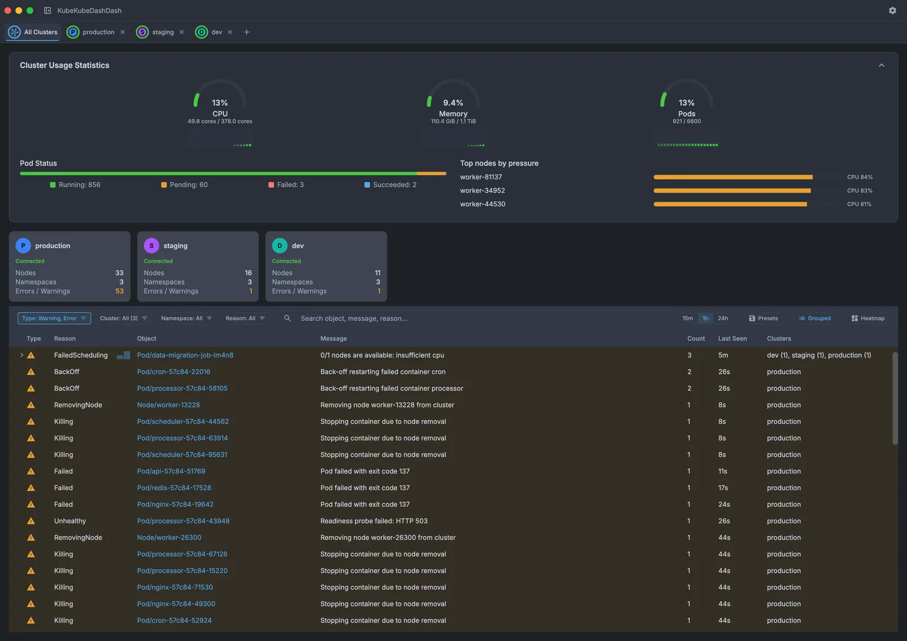
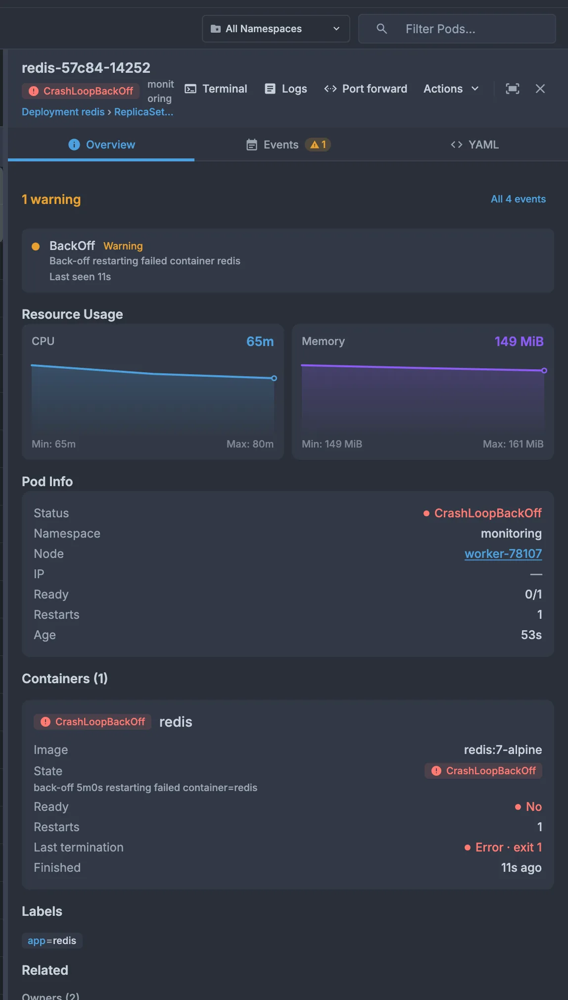
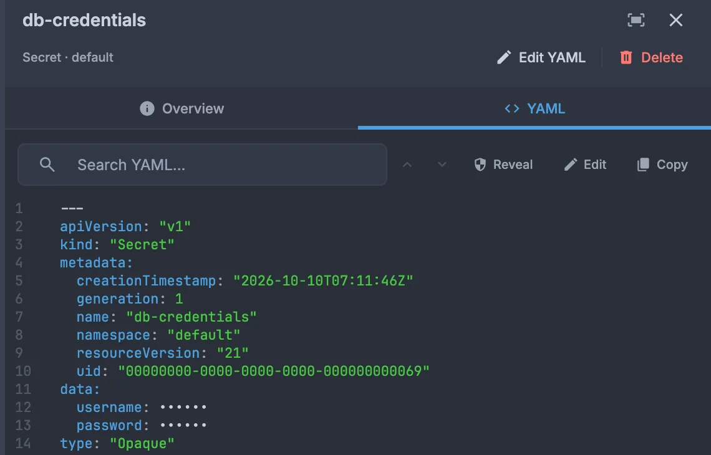
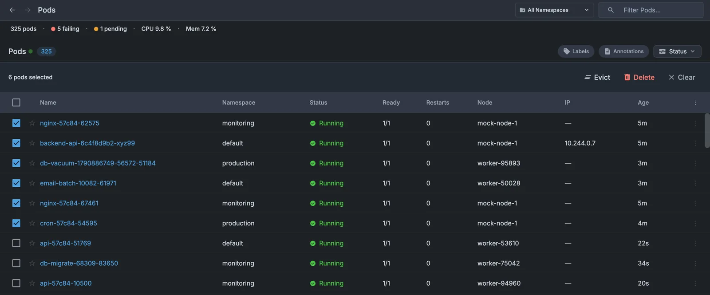
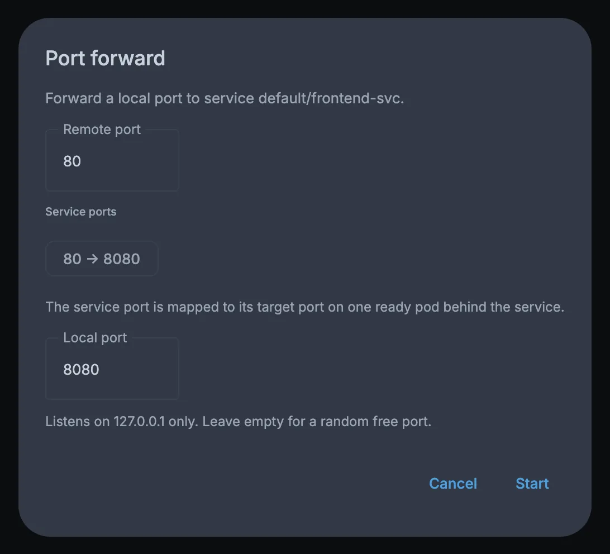
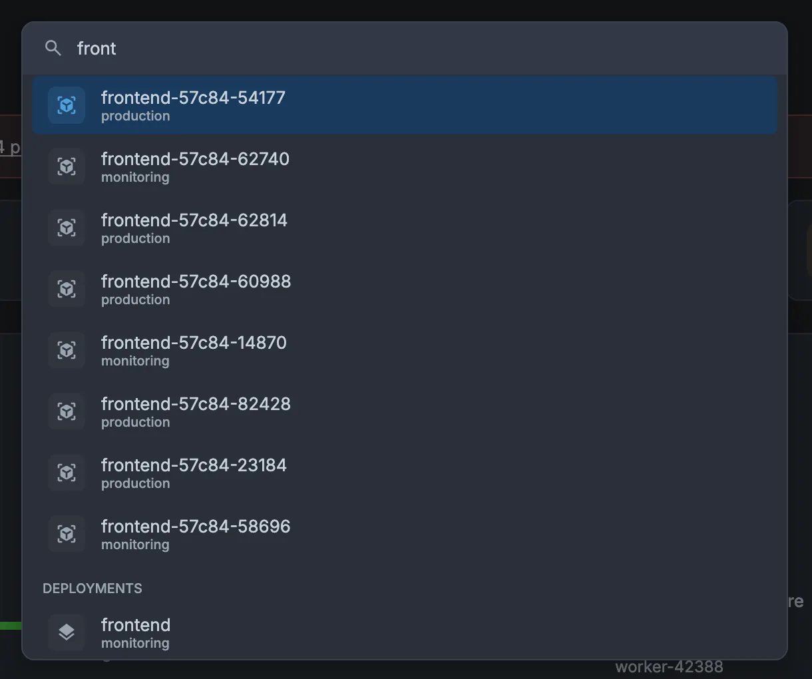
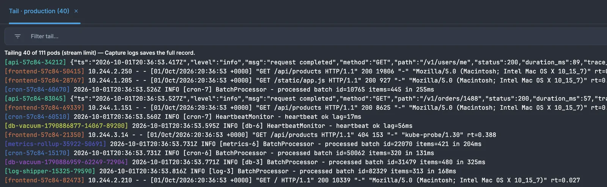
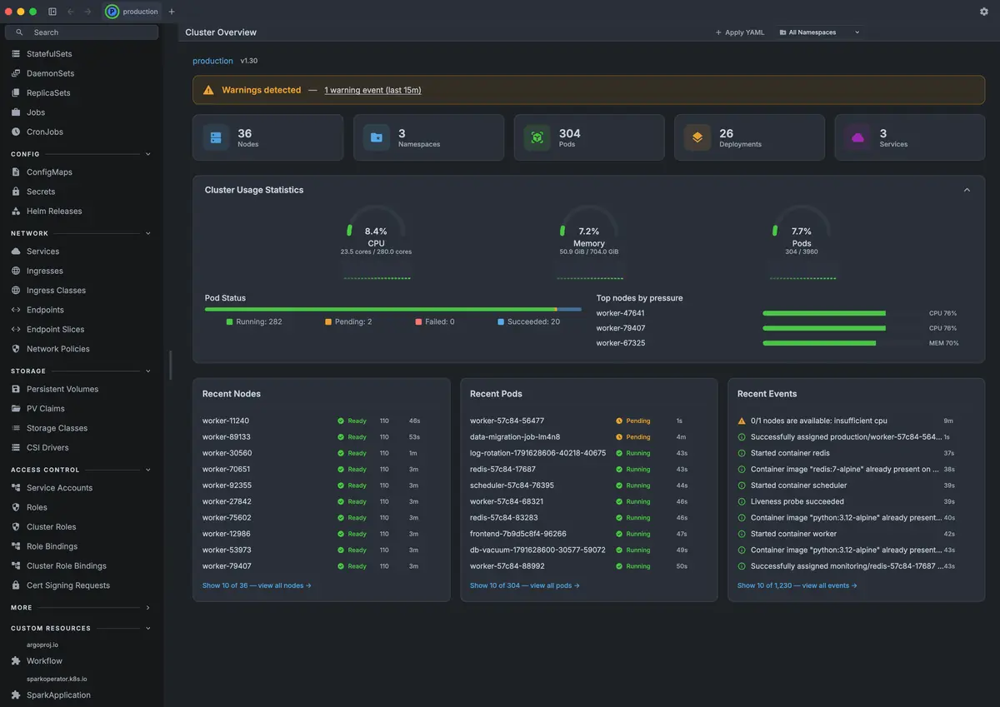

Triage the whole fleet
The All Clusters tab adds up CPU, memory and pods across every open cluster, ranks clusters by recent errors, and merges their events into one filterable feed — with saved presets and a reason heatmap.

Browse every resource, triage events across clusters, tail logs and port-forward — then scale, restart, drain or evict, with a confirmation in front of every destructive step.
Not notarized yet, so the first launch needs one extra step — here's how.

Same cluster, ten looks — switch any time in Settings.
No account and no agent in your cluster: it connects with the contexts and cloud CLIs you already use.
No YAML editing, no blanket create. Destructive actions confirm first; reversible ones offer Undo.
⌘K jumps to any screen, resource or action. Back and forward work like a browser.
Tabs, screens and window layout come back on the next launch.
The All Clusters tab adds up CPU, memory and pods across every open cluster, ranks clusters by recent errors, and merges their events into one filterable feed — with saved presets and a reason heatmap.

Warnings surface at the top of the pod, and each container card says why: the waiting reason, the exit code, and when the last run ended.

Secret values are masked in YAML until you reveal them — on purpose, one resource at a time.

Select pods across the list and evict or delete them together. Scale, rollout restart, cordon, drain, trigger and suspend sit in each resource's header.

Forward a pod or service to 127.0.0.1, then open, copy or stop it from the drawer's Port forwards tab.

A fuzzy palette: type part of a name and jump straight to any screen, cluster, namespace, pod, node or CRD.

A stern-style merged tail follows every running pod in a namespace, color-coded per pod — next to per-container log tabs with filter, wrap, timestamps and previous-run logs.

Pixel headings, a retro terminal font, squared corners, and a CRT that powers on when you switch — with optional scanlines. Pure nostalgia; every feature still works.

Turn on the embedded Model Context Protocol server in Settings → Integrations and point any MCP client at it. It is read-only by design: it binds to 127.0.0.1, can require a bearer token (always required when you open it to your network), and keeps Secret, ConfigMap and Node contents out of its YAML results.
list_clusters every open clusterlist_resources any kind, any namespaceget_resource_yaml one object's YAMLget_pod_logs recent lines, by container{
"mcpServers": {
"kubekubedashdash": {
"type": "sse",
"url": "http://127.0.0.1:3001/",
"headers": {
"Authorization": "Bearer <token from Settings>"
}
}
}
}Sortable, live-updating tables — via Kubernetes watch where available, polled otherwise — with keyboard navigation, truncation-on-hover, and a side panel that pairs an Overview with read-only, syntax-highlighted YAML. The same UI covers everything from core workloads to admission webhooks and any CRD on your cluster.
Free and open source under the MIT license. Each installer bundles its own Java runtime — there's nothing else to install.
First launch on macOS. The app isn't notarized yet, so macOS blocks the first launch. Open it once, then go to System Settings → Privacy & Security and click Open Anyway (macOS 15 Sequoia and later). On older macOS, Control-click the app in Applications → Open.
Intel Mac or another Linux? The macOS build is Apple
Silicon only and the Linux build is a Debian package for amd64.
Anything else can be
built from source
with JDK 21. Each installer ships with a matching
.sha256 on the
releases page.
You'll need a ~/.kube/config with at
least one cluster. Connecting to EKS, GKE, or AKS uses your existing
aws, gcloud, or kubelogin/az
CLI; CPU and memory figures need a Metrics Server.
Pick Demo Cluster in the connection picker and explore every screen against a built-in simulator — synthetic nodes, pods, seeded CRDs, live-updating metrics, and a steady trickle of events. No kubeconfig required.
Download and explore